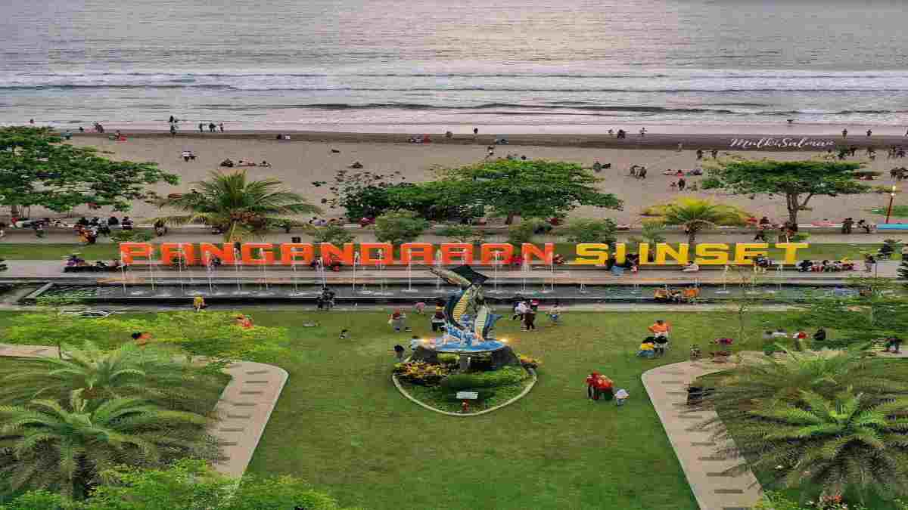

Selamat Datang
Pantai Pangandaran dinobatkan sebagai salah satu pantai tercantik di Pulau Jawa. Pantai Pangandaran memiliki bentangan pantai yang luas. Pantai ini telah menjadi objek wisaya Pangandaran sejak tahun 2012. Pangandaran merupakan bagian dari selatan Pulau Jawa yang terkenal karena ombak besarnya. Namun pantainya landai dengan rentang waktu antara pasang lautnya yang relatif lama.
Wisata Pantai